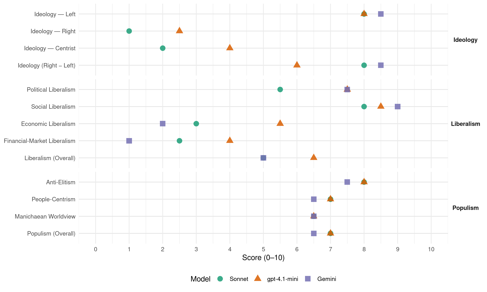

PODEMOS (Chile, 2009)
manifesto_id 155025_200912
Get full text: This site shows derived annotations and short verbatim quotes only. The full manifesto text is © Manifesto Project / WZB — obtain it via manifesto-project.wzb.eu using the manifesto_id above.
Headline scores
| Dimension | Sonnet | gpt-4.1-mini | Gemini |
|---|---|---|---|
| Populism (Overall) | 7.0 | 7.0 | 6.5 |
| Anti-Elitism | 8.0 | 8.0 | 7.5 |
| People-Centrism | 7.0 | 7.0 | 6.5 |
| Manichaean Worldview | 6.5 | 6.5 | 6.5 |
| Ideology (Right − Left) | 8.0 | 6.0 | 8.5 |
| Liberalism (Overall) | 5.0 | 6.5 | 5.0 |
| Political Liberalism | 5.5 | 7.5 | 7.5 |
| Social Liberalism | 8.0 | 8.5 | 9.0 |
| Economic Liberalism | 3.0 | 5.5 | 2.0 |
| Financial-Market Liberalism | 2.5 | 4.0 | 1.0 |
Evidence per dimension
Economic Liberalism
Gemini · score 2.0 · verified · chunk 1
“Estado subsidiario sólo favorece al gran capital”
recomponer el Estado, convertirlo en un instrumento indispensable para el desarrollo de Chile. El Estado subsidiario sólo favorece al gran capital.
Gemini · score 2.0 · verified · chunk 2
“afán de lucro que predomina hoy día”
la universidad tiene fines superiores muy alejados del afán de lucro que predomina hoy día
gpt-4.1-mini · score 6.0 · verified · chunk 1
“un sector público eficiente, capaz de regular el mercado adecuadamente, intervenir los monopolios”
Impulsaremos un nuevo tipo de Estado, con un sector público eficiente, capaz de regular el mercado adecuadamente, intervenir los monopolios y crear actividades empresariales.
gpt-4.1-mini · score 5.0 · verified · chunk 2
“incrementaremos sustancialmente los recursos para educación superior de las universidades públicas”
…incrementaremos sustancialmente los recursos para educación superior de las universidades públicas, asegurando un presupuesto de educación del orden del 7% del PIB, según la recomendación de la UNESCO. Terminaremos con el sistema de crédito actual a los estudiantes, reemplazándolo por asignaciones presupuestarias directas de matrículas y aranceles para todos los alumnos que lo necesiten.
Sonnet · score 2.0 · verified · chunk 1
“regular el mercado adecuadamente, intervenir los monopolios”
Impulsaremos un nuevo tipo de Estado, con un sector público eficiente, capaz de regular el mercado adecuadamente, intervenir los monopolios y crear actividades empresariales.
Sonnet · score 4.0 · verified · chunk 2
“desarrollo inorgánico del aparato privado”
se ha producido un desarrollo inorgánico del aparato privado de educación superior, el que unido al abandono de las instituciones estatales, ha resultado en un sistema de baja calidad
Financial-Market Liberalism
Gemini · score 1.0 · verified · chunk 1
“agresión usurera de la banca, casas comerciales”
Que los consumidores sean protegidos por el Estado para que no sufran la agresión usurera de la banca, casas comerciales y farmacias.
Gemini · score 1.0 · verified · chunk 2
“rebajar la tasa máxima convencional de intereses”
Proponemos, a) Rebajar la tasa máxima convencional de intereses; En Chile, se aplica por décadas
gpt-4.1-mini · score 5.0 · verified · chunk 1
“acabar con el secreto bancario y la privacidad de las declaraciones tributarias”
Estas son razones poderosas para acabar con el secreto bancario y la privacidad de las declaraciones tributarias. La corrupción y el lobbismo se han visto facilitados por la existencia de un sistema manejado por una minoría económica y política.
gpt-4.1-mini · score 3.0 · verified · chunk 2
“la crisis financiera ha afectado los fondos de pensiones. Estos han perdido cerca de US$ 40 mil millones”
…la crisis financiera ha afectado los fondos de pensiones. Estos han perdido cerca de US$ 40 mil millones por la caída de las bolsas internacionales. Ello ha arruinado los ahorristas y colocado en serios aprietos a los pensionados.
Sonnet · score 2.0 · verified · chunk 1
“la banca se ha encapsulado, no otorga créditos”
la crisis internacional, promovida por el capitalismo especulativo, ha golpeado la economía chilena brutalmente… la banca se ha encapsulado, no otorga créditos o lo hace a tasas muy elevadas, afectando especialmente a los pequeños empresarios.
Sonnet · score 3.0 · verified · chunk 2
“Reconstruir un sistema de pensiones público que no dependa de los mercados financieros”
b) Reconstruir un sistema de pensiones público que no dependa de los mercados financieros. Resulta perfectamente factible restablecer el sistema de reparto.
Political Liberalism
Gemini · score 8.0 · verified · chunk 1
“Asamblea Constituyente que elabore una nueva Carta”
derogar la Constitución de 1980 y convocar a una Asamblea Constituyente que elabore una nueva Carta Fundamental y que devuelva
Gemini · score 7.0 · verified · chunk 2
“fundamentales para el desarrollo de la democracia”
Los Derechos Humanos, su protección y promoción, son fundamentales para el desarrollo de la democracia.
gpt-4.1-mini · score 8.0 · verified · chunk 1
“con participación de las organizaciones sociales, un nuevo equilibrio entre el Gobierno, el Parlamento”
El nuevo marco constitucional deberá estar basado en la representatividad de todos los sectores políticos, con participación de las organizaciones sociales, un nuevo equilibrio entre el Gobierno, el Parlamento, las regiones y las comunas y donde la igualdad de derechos políticos, económicos y sociales tenga rango constitucional efectivo.
gpt-4.1-mini · score 7.0 · verified · chunk 2
“Los Derechos Humanos, su protección y promoción, son fundamentales para el desarrollo de la democracia”
Los Derechos Humanos, su protección y promoción, son fundamentales para el desarrollo de la democracia. Nuestro concepto de Derechos Humanos trasciende el marco político para incluir de manera protagónica los derechos económicos y sociales sin los cuales es imposible ejercer ningún otro.
Sonnet · score 6.0 · verified · chunk 1
“derogar la Constitución de 1980 y convocar a una Asamblea Constituyente”
Para construir una democracia efectiva, será necesario derogar la Constitución de 1980 y convocar a una Asamblea Constituyente que elabore una nueva Carta Fundamental y que devuelva la soberanía al pueblo de Chile.
Sonnet · score 5.0 · verified · chunk 2
“Los Derechos Humanos, su protección y promoción”
Los Derechos Humanos, su protección y promoción, son fundamentales para el desarrollo de la democracia.
Liberalism (Overall)
Gemini · score 5.0 · verified · chunk 1
“Asamblea Constituyente que elabore una nueva Carta”
derogar la Constitución de 1980 y convocar a una Asamblea Constituyente que elabore una nueva Carta Fundamental y que devuelva
Gemini · score 5.0 · verified · chunk 2
“fundamentales para el desarrollo de la democracia”
Los Derechos Humanos, su protección y promoción, son fundamentales para el desarrollo de la democracia.
gpt-4.1-mini · score 7.0 · verified · chunk 1
“El nuevo marco constitucional deberá estar basado en la representatividad de todos los sectores políticos”
El nuevo marco constitucional deberá estar basado en la representatividad de todos los sectores políticos, con participación de las organizaciones sociales, un nuevo equilibrio entre el Gobierno, el Parlamento, las regiones y las comunas y donde la igualdad de derechos políticos, económicos y sociales tenga rango constitucional efectivo.
gpt-4.1-mini · score 6.0 · verified · chunk 2
“Los Derechos Humanos, su protección y promoción, son fundamentales para el desarrollo de la democracia”
Los Derechos Humanos, su protección y promoción, son fundamentales para el desarrollo de la democracia. Nuestro concepto de Derechos Humanos trasciende el marco político para incluir de manera protagónica los derechos económicos y sociales sin los cuales es imposible ejercer ningún otro.
Sonnet · score 5.0 · mixed · chunk 1
“Ejercer efectivo control de los movimientos especulativos de capital”
Proponemos: b) Ejercer efectivo control de los movimientos especulativos de capital; c) Impulsar un manejo activo de la política cambiaria, con tipo de cambio real alto y estable
Sonnet · score 5.0 · verified · chunk 2
“garantizar una educación superior cuyo norte sea Chile”
Una nueva mirada es necesaria para garantizar una educación superior cuyo norte sea Chile y las necesidades de su pueblo.
Anti-Elitism
Gemini · score 8.0 · verified · chunk 1
“asegurar a las cúpulas políticas su reproducción”
excluye de los cargos de representación pública, para asegurar a las cúpulas políticas su reproducción en el poder.
Gemini · score 7.0 · verified · chunk 2
“estafar al público mediante la colusión”
Tres cadenas de farmacias se coordinan para estafar al público mediante la colusión de precios de los fármacos
gpt-4.1-mini · score 9.0 · verified · chunk 1
“los grandes empresarios les ha abierto las puertas al poder político”
La inmensa fuerza material adquirida por los grandes empresarios les ha abierto las puertas al poder político. Por iniciativa propia y debilidades de los gobiernos, se han convertido de facto, en una suerte de partido político.
gpt-4.1-mini · score 7.0 · verified · chunk 2
“la derecha política y el poder empresarial promueven el ultraliberalismo económico”
…los medios de comunicación, concentrados en manos del poder económico y de sectores ultramontanos, son utilizados no sólo como instrumento de defensa de los intereses empresariales, sino también para socializar al país en un pensamiento conservador… la derecha política y el poder empresarial promueven el ultraliberalismo económico, que le viene bien a sus negocios, pero paralelamente impiden las libertades y la diversidad cultural.
Sonnet · score 9.0 · verified · chunk 1
“los grandes empresarios les ha abierto las puertas al poder político”
La inmensa fuerza material adquirida por los grandes empresarios les ha abierto las puertas al poder político. Por iniciativa propia y debilidades de los gobiernos, se han convertido de facto, en una suerte de partido político.
Sonnet · score 7.0 · verified · chunk 2
“lobby de la industria ha sido capaz de impedir”
A pesar de las denuncias reiteradas respecto del costo escandaloso de la referida administración privada, el lobby de la industria ha sido capaz de impedir hasta el momento cualquier medida efectiva de control de costos.
Ideology — Centrist
gpt-4.1-mini · score 3.0 · verified · chunk 1
“Queremos una sociedad plural, donde se expresen las diversas formas de pensamiento”
Queremos una sociedad plural, donde se expresen las diversas formas de pensamiento, para que nuestros compatriotas puedan decidir libremente y sin imposiciones hegemónicas el país que desean construir.
gpt-4.1-mini · score 5.0 · verified · chunk 2
“Una nueva mirada es necesaria para garantizar una educación superior cuyo norte sea Chile y las necesidades de su pueblo”
…ha resultado en un sistema de baja calidad que no responde a las demandas del desarrollo económico nacional y que no distribuye equitativamente las oportunidades para los jóvenes. Una nueva mirada es necesaria para garantizar una educación superior cuyo norte sea Chile y las necesidades de su pueblo.
Sonnet · score 2.0 · verified · chunk 1
“una potente fuerza política de izquierda en el país”
El desafío exige una potente fuerza política de izquierda en el país, porque los partidos históricos de ese signo, miembros de la coalición de Gobierno, renunciaron a la tarea transformadora que les dio origen.
Sonnet · score 2.0 · verified · chunk 2
“Un Gobierno progresista debe revertir”
Han proliferado recientemente, por ejemplo, las señales religiosas producidas en Estados Unidos… Un Gobierno progresista debe revertir esta situación.
Ideology — Left
Gemini · score 9.0 · verified · chunk 1
“modelo económico favorable a los grandes empresarios”
no ha modificado el régimen político excluyente, el modelo económico favorable a los grandes empresarios y el sistema social
Gemini · score 8.0 · verified · chunk 2
“reconstruir un sistema de pensiones público”
Proponemos, a) El retorno al sistema público… b) Reconstruir un sistema de pensiones público que no dependa de los mercados
gpt-4.1-mini · score 9.0 · verified · chunk 1
“una política económica activa, que ayude a la diversificación productiva-exportadora”
Somos firmes partidarios de una política económica activa, que ayude a la diversificación productiva-exportadora del país y potencie el mercado interno, acorde con la estrategia de desarrollo propuesta.
gpt-4.1-mini · score 7.0 · verified · chunk 2
“incrementaremos sustancialmente los recursos para educación superior de las universidades públicas”
…incrementaremos sustancialmente los recursos para educación superior de las universidades públicas, asegurando un presupuesto de educación del orden del 7% del PIB, según la recomendación de la UNESCO. Terminaremos con el sistema de crédito actual a los estudiantes, reemplazándolo por asignaciones presupuestarias directas de matrículas y aranceles para todos los alumnos que lo necesiten.
Sonnet · score 9.0 · verified · chunk 1
“Nacionalización de la gran minería del cobre”
Para impulsar la estrategia de desarrollo, proteger las riquezas básicas y avanzar hacia una nueva estructura productiva, es indispensable la nacionalización del cobre. Proponemos: a) Nacionalización de la gran minería del cobre;
Sonnet · score 7.0 · verified · chunk 2
“retorno al sistema público de los afiliados”
Proponemos, a) El retorno al sistema público de los afiliados próximos a jubilar. Debe permitirse que los afiliados que están próximos a jubilar regresen al sistema público
Ideology (Right − Left)
Gemini · score 9.0 · verified · chunk 1
“modelo económico favorable a los grandes empresarios”
no ha modificado el régimen político excluyente, el modelo económico favorable a los grandes empresarios y el sistema social
Gemini · score 8.0 · verified · chunk 2
“reconstruir un sistema de pensiones público”
Proponemos, a) El retorno al sistema público… b) Reconstruir un sistema de pensiones público que no dependa de los mercados
gpt-4.1-mini · score 7.0 · verified · chunk 1
“una política económica activa, que ayude a la diversificación productiva-exportadora”
Somos firmes partidarios de una política económica activa, que ayude a la diversificación productiva-exportadora del país y potencie el mercado interno, acorde con la estrategia de desarrollo propuesta.
gpt-4.1-mini · score 5.0 · verified · chunk 2
“la derecha política y el poder empresarial promueven el ultraliberalismo económico”
…los medios de comunicación, concentrados en manos del poder económico y de sectores ultramontanos, son utilizados no sólo como instrumento de defensa de los intereses empresariales, sino también para socializar al país en un pensamiento conservador… la derecha política y el poder empresarial promueven el ultraliberalismo económico, que le viene bien a sus negocios, pero paralelamente impiden las libertades y la diversidad cultural.
Sonnet · score 9.0 · verified · chunk 1
“desafío al neoliberalismo y a la corrupción política”
los vientos de cambio que recorren todos los países vecinos, en desafío al neoliberalismo y a la corrupción política, soplarán con mayor fuerza en nuestro país
Sonnet · score 7.0 · verified · chunk 2
“privatización el sistema previsional chileno”
La crisis mundial ha demostrado la irrealidad de los supuestos básicos en que se fundó la privatización el sistema previsional chileno.
Ideology — Right
gpt-4.1-mini · score 2.0 · verified · chunk 1
“rechazamos además la energía nuclear porque agudizaría la dependencia energética”
Rechazamos además la energía nuclear porque agudizaría la dependencia energética del país, no existen tecnologías seguras para el depósito de la basura radioactiva y la experiencia internacional demuestra que una eventual catástrofe siempre estaría presente sobre nuestros habitantes.
gpt-4.1-mini · score 3.0 · verified · chunk 2
“la derecha política y el poder empresarial promueven el ultraliberalismo económico”
…los medios de comunicación, concentrados en manos del poder económico y de sectores ultramontanos, son utilizados no sólo como instrumento de defensa de los intereses empresariales, sino también para socializar al país en un pensamiento conservador… la derecha política y el poder empresarial promueven el ultraliberalismo económico, que le viene bien a sus negocios, pero paralelamente impiden las libertades y la diversidad cultural.
Sonnet · score 1.0 · verified · chunk 1
“Terminaremos con las discriminaciones políticas, económicas, sociales y culturales”
Terminaremos con las discriminaciones políticas, económicas, sociales y culturales que sufren los pueblos indígenas.
Sonnet · score 1.0 · verified · chunk 2
“respetando la diversidad ideológica y política”
Priorizar las relaciones con América Latina, respetando la diversidad ideológica y política de sus gobiernos.
Manichaean Worldview
Gemini · score 7.0 · verified · chunk 1
“derribar la muralla que divide a los chilenos”
Nos proponemos, derribar la muralla que divide a los chilenos en la educación, salud y la previsión
Gemini · score 6.0 · verified · chunk 2
“instrumento escandaloso de robo a los enfermos”
la venta de medicinas se ha convertido en instrumento escandaloso de robo a los enfermos.
gpt-4.1-mini · score 7.0 · verified · chunk 1
“la dictadura por desprestigiar la política y debilitar las organizaciones sociales”
la acción sistemática que realizó la dictadura por desprestigiar la política y debilitar las organizaciones sociales. Se ha modificado la Constitución de Pinochet, pero no se ha tenido la voluntad política para eliminar el discriminatorio sistema electoral binominal
gpt-4.1-mini · score 6.0 · verified · chunk 2
“la derecha política y el poder empresarial promueven el ultraliberalismo económico”
…los medios de comunicación, concentrados en manos del poder económico y de sectores ultramontanos, son utilizados no sólo como instrumento de defensa de los intereses empresariales, sino también para socializar al país en un pensamiento conservador… la derecha política y el poder empresarial promueven el ultraliberalismo económico, que le viene bien a sus negocios, pero paralelamente impiden las libertades y la diversidad cultural.
Sonnet · score 8.0 · verified · chunk 1
“Los constructores del libre mercado han fracasado”
Los constructores del libre mercado han fracasado, en particular su representante chileno, el candidato presidencial Piñera, y junto a él, todos los que se plegaron al neoliberalismo y divinizaron el mercado.
Sonnet · score 5.0 · verified · chunk 2
“instrumento escandaloso de robo a los enfermos”
la venta de medicinas se ha convertido en instrumento escandaloso de robo a los enfermos. Tres cadenas de farmacias se coordinan para estafar al público mediante la colusión de precios
People-Centrism
Gemini · score 7.0 · verified · chunk 1
“haga carne en el pueblo de Chile”
con un nuevo pensamiento que se haga carne en el pueblo de Chile, es la tarea prioritaria
Gemini · score 6.0 · verified · chunk 2
“Chile y las necesidades de su pueblo”
garantizar una educación superior cuyo norte sea Chile y las necesidades de su pueblo.
gpt-4.1-mini · score 8.0 · verified · chunk 1
“democratizar el poder económico, político y territorial”
Nuestro proyecto se propone transformar la institucionalidad existente para democratizar el poder económico, político y territorial, y de esta forma, derribar las barreras sociales que dividen a los chilenos y frenan el desarrollo.
gpt-4.1-mini · score 6.0 · verified · chunk 2
“una nueva mirada es necesaria para garantizar una educación superior cuyo norte sea Chile y las necesidades de su pueblo”
…ha resultado en un sistema de baja calidad que no responde a las demandas del desarrollo económico nacional y que no distribuye equitativamente las oportunidades para los jóvenes. Una nueva mirada es necesaria para garantizar una educación superior cuyo norte sea Chile y las necesidades de su pueblo. La existencia de un Sistema de Educación Superior (SES) debe asegurar al mismo tiempo la equidad y calidad en la formación de la juventud.
Sonnet · score 8.0 · verified · chunk 1
“su verdadero dueño: El Pueblo de Chile”
esta colosal riqueza, está siendo aprovechada fundamentalmente por empresas extranjeras sin real beneficio para su verdadero dueño: El Pueblo de Chile.
Sonnet · score 6.0 · verified · chunk 2
“las necesidades de su pueblo”
Una nueva mirada es necesaria para garantizar una educación superior cuyo norte sea Chile y las necesidades de su pueblo.
Populism (Overall)
Gemini · score 7.0 · verified · chunk 1
“asegurar a las cúpulas políticas su reproducción”
excluye de los cargos de representación pública, para asegurar a las cúpulas políticas su reproducción en el poder.
Gemini · score 6.0 · verified · chunk 2
“estafar al público mediante la colusión”
Tres cadenas de farmacias se coordinan para estafar al público mediante la colusión de precios de los fármacos
gpt-4.1-mini · score 8.0 · verified · chunk 1
“democratizar el poder económico, político y territorial”
Nuestro proyecto se propone transformar la institucionalidad existente para democratizar el poder económico, político y territorial, y de esta forma, derribar las barreras sociales que dividen a los chilenos y frenan el desarrollo.
gpt-4.1-mini · score 6.0 · verified · chunk 2
“la derecha política y el poder empresarial promueven el ultraliberalismo económico”
…los medios de comunicación, concentrados en manos del poder económico y de sectores ultramontanos, son utilizados no sólo como instrumento de defensa de los intereses empresariales, sino también para socializar al país en un pensamiento conservador… la derecha política y el poder empresarial promueven el ultraliberalismo económico, que le viene bien a sus negocios, pero paralelamente impiden las libertades y la diversidad cultural.
Sonnet · score 8.0 · verified · chunk 1
“terminar con la colusión entre la política y los negocios”
Enfrentaremos decididamente toda forma de corrupción, convirtiendo el sector público en ejemplo de honestidad y terminaremos con la colusión entre la política y los negocios.
Sonnet · score 6.0 · verified · chunk 2
“poder económico y de sectores ultramontanos”
los medios de comunicación, concentrados en manos del poder económico y de sectores ultramontanos, son utilizados no sólo como instrumento de defensa de los intereses empresariales
Social Liberalism